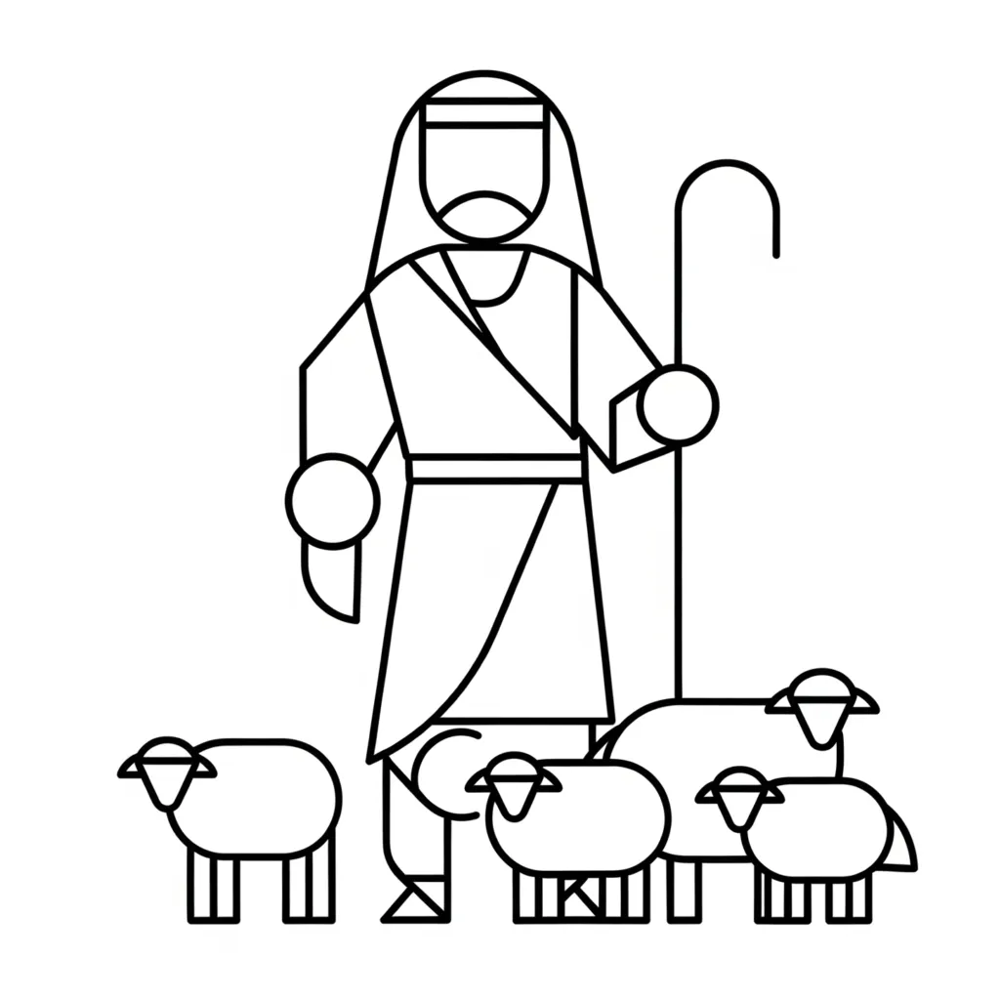

The repeated echoes between Ezekiel’s prophecies and Jesus’ ministry, particularly their shared emphasis on shepherds, sheep, and divine care — suggest that the Bible is not simply a record of historical events, but a psychological narrative. These parallels reveal a deeper symbolic thread, where each shepherd, each lost sheep, and each act of gathering points inward to the soul’s journey and the transformation of consciousness.
According to Neville Goddard’s Psychological Interpretation
Across Scripture, the imagery of shepherds and sheep symbolises the relationship between awareness (the shepherd) and its assumptions (the flock). In Ezekiel 34, God condemns the false shepherds of Israel and promises a true Shepherd — a prophecy echoed by Jesus in the New Testament when He instructs, “Feed my sheep.” Neville Goddard reads these passages not as literal history but as symbolic of how consciousness guides imagination toward fulfilment.
Ezekiel 34 — False Shepherds and the Promise of the True
“Woe be to the shepherds that feed themselves! Should not the shepherds feed the flock?... I will set up one shepherd over them, and he shall feed them, even my servant David.”
— Ezekiel 34:2, 23
-
False shepherds symbolise undisciplined beliefs and reactive thoughts that scatter and fail to nurture your inner world.
-
The flock represents your mental assumptions, wandering and hungry for conscious direction.
-
My servant David denotes the awakened imagination—the true Shepherd who feeds the flock with the feeling of the wish fulfilled.
“In Scripture the shepherd is the power of consciousness which watches over the lambs of imagination.” — Neville Goddard
Jesus’ Commission — Feed My Sheep
“Feed my sheep.”
— John 21:17
Post-resurrection, Jesus commands His disciple: to nourish the flock he entrusted. Neville interprets this as your I AM awareness guiding your own psyche to maintain states of fulfilment.
-
Feed — to assume and dwell in the feeling of the wish fulfilled.
-
Sheep — the individual thoughts and desires awaiting direction.
“To feed your sheep is to sustain the life of your desired state until it hardens into fact.” — Neville Goddard
New Testament Echoes of the Shepherd
Neville highlights further passages where Jesus employs shepherd imagery — each echoing Ezekiel’s themes:
-
“I AM the good shepherd: the good shepherd lays down his life for the sheep.”
John 10:11
Jesus embodies the destined true Shepherd, sacrificing old identities to rescue and restore the flock. -
“Other sheep I have, which are not of this fold; them also I must bring.”
John 10:16
The promise of expanding awareness beyond current beliefs, mirroring Ezekiel’s gathering of scattered sheep into one fold (Ezekiel 34:16). -
“I AM the door; by me if any man enter in, he shall be saved.”
John 10:7-9
Jesus as the gateway to restored relationship — just as Ezekiel 34 condemns closed gates that trap and scatter sheep (Ezekiel 34:21). -
“He brings back the fold to the strong and feeds them in the high pasture.”
Ezekiel 34:14
Paralleled in Matthew 18:12-13 (BBE) where Jesus explains the shepherd leaves ninety-nine to seek the one lost sheep — illustrating the active rescue of scattered assumptions. -
“When He saw the multitudes, He had compassion on them, because they were distressed and scattered, like sheep having no shepherd.”
Matthew 9:36
Echoing Ezekiel’s opening indictment of lost and hungry sheep (Ezekiel 34:6). -
“Feed my lambs… feed my sheep… feed my sheep.”
John 21:15-17
This threefold charge parallels Ezekiel’s emphasis on shepherds feeding the flock (Ezekiel 34:2), underscoring the necessity of guardianship and sustenance in the inner world.
Practising the Shepherd’s Role
-
Identify the Sheep
Observe your dominant thoughts. Which are scattered or distressed? -
Assume the Shepherd’s Posture
Cultivate “I AM” feelings of fulfilment: “I AM safe,” “I AM abundant.” -
Feed the Flock
Envelop each thought in the feeling of the wish fulfilled until it aligns with your desired state. -
Resist False Shepherds
Notice doubts and fears. Refuse them attention; they scatter the flock. -
Maintain the Fold
Return daily to disciplined imagination, feeding your flock until it becomes your reality.
Conclusion — The Inner Shepherding
From Ezekiel’s prophecy to Jesus’ commission, the shepherd motif maps consciousness tending imagination. Neville Goddard teaches that your “I AM” awareness is the true Shepherd, and your assumptions are the sheep. By feeding your flock with deliberate, fulfilled assumption, you shepherd your inner world into a manifesting reality.
“You are the Shepherd. Your imagination is the flock. Assume your desired state and feed it until it becomes your world.” — Inspired by Neville Goddard
Note: If the Bible was just literal history, it would be unusual to find such deliberate and repeated parallels between the words of Ezekiel and the teachings of Jesus. These echoes suggest a psychological symbolism at work — not just events, but states of consciousness and inner guidance reflected through narrative.
About The Author | Ezekiel Series | Shepherd and Lamb Series